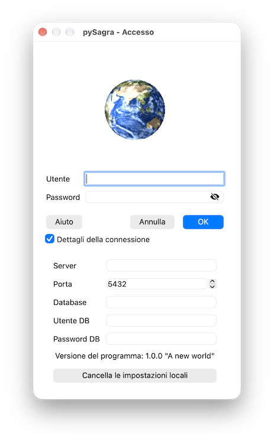
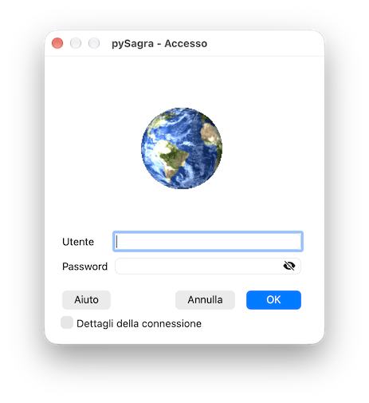

Per utilizzare pySagra è necessario far connettere il programma ad un database server PostgreSQL dove sia già presente una database applicativo di pySagra. Si vedano le istruzioni specifiche per l'installazione del server e del database applicativo.
Al primo avvio dell'applicazione vengono richiesti i parametri di connessione al server e la finestra si presenta come in figura:

I parametri richiesti per effettuare la connessione al database server sono:
Tramite il tasto Cancella le impostazioni locali è possibile azzerare eventuali impostazioni dell'applicazione memorizzate in locale nel PC, non nel database, che hanno generato problemi. Gli esempi tipici sono: nescoste per errore tutte le toolbar, modificata la dimensione della finestra che la rende invisibile, ecc.
Ci sono 2 utenti applicativi di sistema predefiniti e non modificabili:
Questi utenti sono amministratori ed hanno assegnato un menu ed un profilo che permette loro un accesso completo a tutte le funzionalità del programma. Si consiglia di modificarne la password al primo accesso ma non è obbligatorio farlo
Inoltre sono precaricati altri 2 utenti:
Essendo utenti normali si possono modificare ed anche cancellare. Sono utenti variamente limitati ma un qualunque amministratore può modificarne i permessi, profili e menu
La prima volta che si accede ad un server TUTTI questi parametri devono essere valorizzati. Le volte successive vengono riproposti gli stessi parametri già utilizzati con successo in precedenza ad esclusione del nome utente e della password:

Per modificare i parametri inseriti cliccare sulla casella Dettagli della connessione